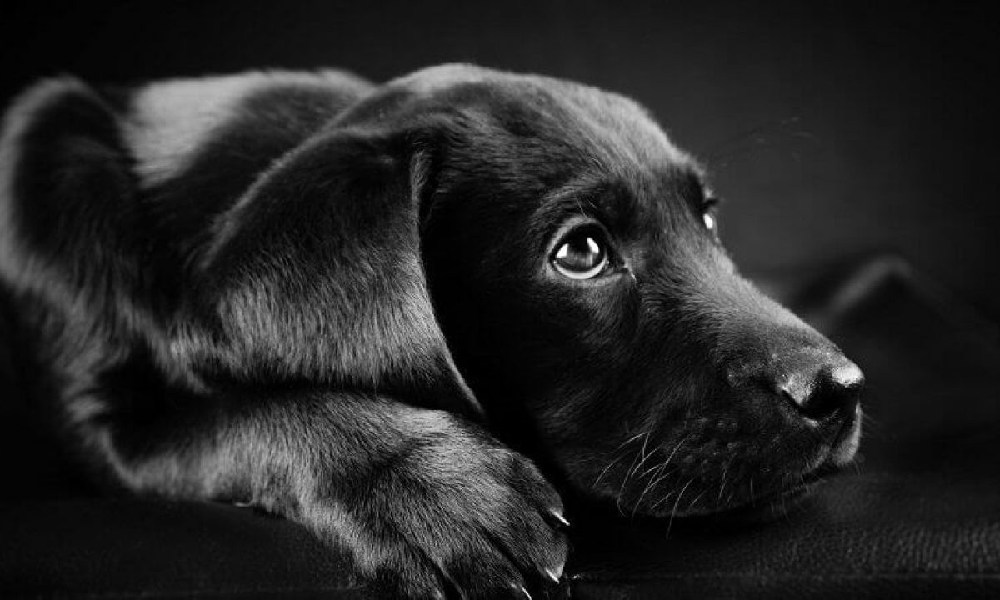

3 adet göz kapaklarý var.
Çoðu köpek sahibi bunun farkýnda olmasa da, köpeklerin aslýnda 3 tane göz kapaðý var. Köpeklerdeki üçüncü göz kapaðýna haw deniyor. Haw, gözün korunmasýný ve
nemlenmesini saðlýyor.
Gerçekten en sadýk dost.
ABD'deki görme engelli bir kiþi köpeði rehber köpeði sayesinde 3.5 kilometrelik bir parkuru aþtý. Bu da köpeklerin bizim en sadýk dostumuz olduðunun baþka bir kanýtý.
Bazý köpek cinslerinin dilleri siyah.
Chow chow ve Shar Pei cinsi köpeklerin dilleri siyah. Ancak uzmanlar bu köpek ýrklarýnýn dillerinin neden siyah olduðunu henüz bilmiyor. Dünyanýn en eski köpek ýrký Saluki.
Saluki cinsi köpeklerin dünyanýn en eski köpek ýrký olduðu düþünülüyor. 329 yýlýnda kraliyet köpeði olarak kullanýlan Saluki'lerin M.Ö. 7 bin yýlýnda
Irak'taki maðaralara çizilmiþ resimleri bulundu. 
Tazýlar çitalarý yenebilir.
Çitalarýn dünyanýn en hýzlý hayvaný olduðu söyleniyor. Ancak görünen o ki tazýlar uzun bir yarýþta çitalarý yenebilecek
hýza sahip. Tazýlar 11 kilometrelik bir yolu saatte 55 kilometre hýzla koþabilirler. Çitalar ise her zaman hýzlarýný koruyamayýp bir süre sonra
yavaþladýklarý için tazýlarýn onlarý yarýþta geçme olasýlýklarý daha yüksek.Dünyanýn en uzun köpeði.
Guiness Rekorlar Kitabýna giren tüm zamanlarýn en uzun köpeði olarak bilinen köpek Zeus arka ayaklarýnýn üzerine kalktýðýnda 224 santimetreyi
bulabiliyor. Omuz hizasýndaki yüksekliði ise 112 santim. Zeus 2014'te 6 yaþýna basmasýna az kala hayata gözlerini yumdu.Bloodhound'un burnu yanýlmaz.
Ýri ve güçlü bir köpek ýrký olan Bloodhound'un burnu o kadar iyi koku alýyor ki mahkemede delil olarak kullanýlabilir. Bloodhound cinsi köpekler 300
saatten daha önce kalmýþ bir kokunun bile izini sürebilir ve 200 kilometre öteden bunu takip edebilir. Bloodhound ýrký, günümüzdeki görünümünü 19.
yüzyýl'da ABD ve Ýngiltere'de aldý.Burun mucizesi.
Köpeklerin burunlarý insanlarýn parmak izleri gibi kendilerine özel. Islak olmasýnýn sebebi ise daha iyi koku alabilmek. Köpekler burunlarýna gelen
kokuyu daha iyi örneklemek için burunlarýný yalýyorlar. Köpeklerin koku duyusu insanlardan 100.000 kat daha iyi.